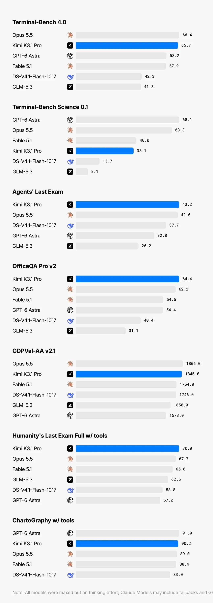
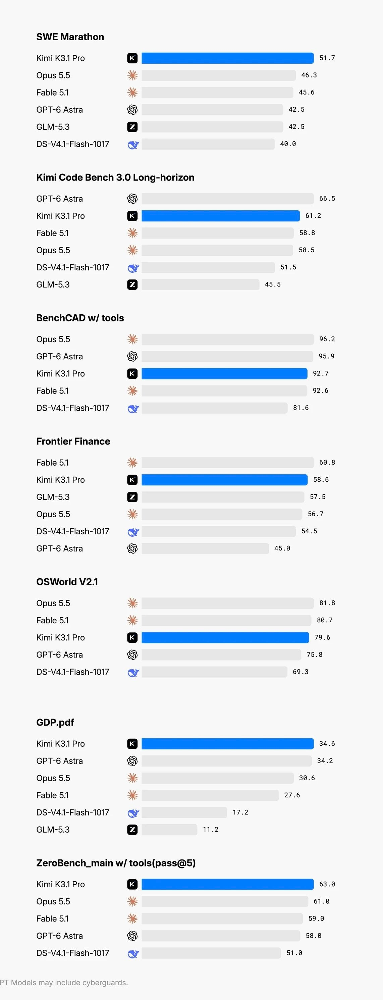

오늘 발표한
중국 Ai가 턱끝까지 쫒아옴


오늘 발표한
중국 Ai가 턱끝까지 쫒아옴
키미히끼잉
뭔 딥시크여
중국 모델 클로드에 연결되어 있어서 국가기밀 다 지들 손으로 갖다바치던게 엊그제 같은데
난 그래도 중국을 믿는다. 미국은 이런저런 규제가 존나 심할것같은데 중국모델은 미국 이겨먹으려고 별의별 인체실험급으로 다 할 것 같거든. 그게 발전압으로 커지면 좋지.
키미다요 키미난다요
절대 단 한번도 시중에 플려있는 프론티어 모델을 앞서간적이 없지만 일단 턱끝까지 따라온것임 ㅋㅋㅋ
지나치게 위험하거나 정렬이 되지 않거나 아직 공개할 이유가 없는 내부모델을 가진 짚클에서는 위기감을 느낄 이유가 1도 없음.
지금 아스트라와 5.5오푸스의 사용감이 역대급인 만큼 프론티어 모델을 더 출시할 이유가 없어서
짚클 입장에선 진짜 턱끝에 온건가? 아니면 우리턱끝에 갈고리 걸고 올라와 있는건가? 하며 프론티어 앞지르는 모델 나올때까지 존버할 가능성도 없지 않을듯. 몇개월 내에 벤치와 실사용감 둘다 따잇하는 모델 출시하지 않는 이상 중국은 그냥 증류거머리형 모델이라는게 확정될것임.
미중 합쳐서 한 서너개 살아남고 나머진 결국 없어질듯
포털처럼
증류 택갈이도 실력임
기를쓰고 중국대변하노
투명하다 투명해